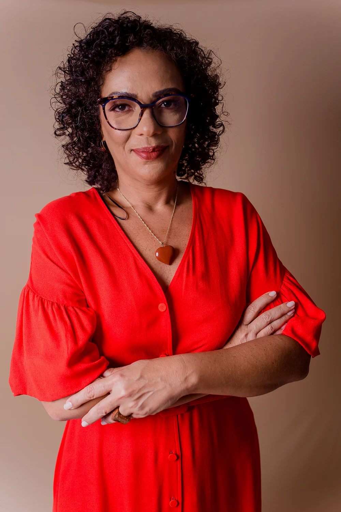

Quando o sofrimento tem raiz ética.
Lesão Moral Ocupacional olha para o impacto de trabalhar contra valores centrais, testemunhar injustiças ou sustentar decisões que rompem confiança.
Ajudo empresas, RH e lideranças a lidar com risco psicossocial, adoecimento no trabalho e decisões sensíveis com método clínico, linguagem de gestão e responsabilidade técnica.
Dra. Ana Paula Teixeira · Membro ICOH · Board Member 2024 · ABERGO · ANAMT/AMB · CRM-BA 12797 · RQE 7237 · Salvador, Bahia.
 Retrato · Salvador 2025
Retrato · Salvador 2025
CRM-BA 12797 · RQE 7237
Medicina do Trabalho
palestras · mais de 10 mil profissionais treinados · 99% de avaliações positivas
OMIS-R no Brasil
Tradução e validação da escala de Lesão Moral Ocupacional
Quando o Trabalho Dói
Livro indicado ao 7º Prêmio Ecos da Literatura

Médica do trabalho, autora, pesquisadora e conselheira em saúde ocupacional.
Antes de falar para empresas, Ana Paula viveu o mundo do trabalho por dentro. Cresceu em Alagoinhas, trabalhou desde cedo na empresa do pai e chegou à medicina com uma escuta formada por família, gestão e experiência organizacional real.
Formada em medicina pela UFBA (1996), com especialização em Medicina do Trabalho (RQE 7237) e pós-graduações em Psiquiatria e Saúde Integrativa. Mestranda em Tecnologias da Saúde pela Escola Bahiana, com pesquisa de validação da escala OMIS-R para o português brasileiro. Membro da ICOH, ABERGO e ANAMT/AMB; Board Member 2024 certificada pela Board Academy.
Construiu quase três décadas de atuação corporativa em mineradoras, siderúrgicas, laboratórios, polos industriais e organizações de diferentes portes. Autora de Quando o Trabalho Dói (Editora AssedioNet, 2025), indicado ao 7º Prêmio Ecos da Literatura.
Hoje, assessora organizações a nomear o que costuma ficar invisível: adoecimento ocupacional, conflitos éticos, retorno ao trabalho e situações que não têm resposta em protocolo padrão.
A Dra. Ana Paula pesquisa trauma, lesão, coragem e resiliência moral no trabalho. Em seu mestrado, trabalha na tradução e validação da escala internacional OMIS-R para o português brasileiro, um instrumento voltado a mapear Lesão Moral Ocupacional em diferentes contextos organizacionais.
Esse campo ajuda a nomear experiências que não cabem apenas em “estresse”, “baixa resiliência” ou “conflito interpessoal”: situações em que decisões, metas, omissões ou práticas institucionais ferem identidade, confiança e integridade profissional.
Há experiências no trabalho que não ferem apenas a rotina. Ferem identidade, confiança e integridade.
Lesão Moral Ocupacional olha para o impacto de trabalhar contra valores centrais, testemunhar injustiças ou sustentar decisões que rompem confiança.
A validação da escala amplia o repertório técnico para investigar sofrimento moral no trabalho com mais precisão e menos improviso.
O tema conversa com saúde mental, integridade organizacional, liderança ética, retorno ao trabalho e prevenção de riscos psicossociais.
A atuação começa pelo tipo de necessidade: formar muita gente, aprofundar conversa com um grupo menor ou sustentar uma decisão concreta.
Em dúvida? Comece pelo Direcionamento Executivo: uma conversa técnica curta costuma clarear se o próximo passo é palestra, roda, protocolo interno ou encaminhamento.
Para empresas, eventos e públicos maiores que precisam de linguagem comum sobre NR-1, fatores psicossociais, liderança e adoecimento no trabalho.
→ 02 Preciso aprofundar com um grupo Rodas de ConversaPara times menores que precisam elaborar situações reais, abrir escuta com segurança e sair com repertório prático.
→ 03 Tenho um caso ou decisão sensível Direcionamento ExecutivoPara liderança, RH, SESMT ou medicina do trabalho diante de nexo, afastamento, retorno, conflito ou dúvida técnica.
→
O custo invisível do adoecimento — e quem paga essa conta.
Um livro para nomear, com clareza e base técnica, o que atravessa pessoas, cultura e trabalho. Voltado a lideranças, RH, profissionais de saúde ocupacional e leitores que desejam compreender, com mais profundidade, os fatores que sustentam adoecimento ou promovem transformação nas organizações.


Uma curadoria de participações públicas em imprensa, rádio, TV, podcasts e canais especializados em saúde, gestão e trabalho.

TVE Bahia · Saúde Mental no Trabalho é Lei
Um guia de 27 páginas para profissionais que precisam avaliar, com método, a relação entre transtornos mentais e contexto ocupacional. Baseado na Resolução CFM 2.323/2022 e na NR-1.
Receber o guia gratuitamente →
Se sua empresa está respondendo à NR-1, estruturando saúde mental no trabalho ou lidando com uma situação concreta de adoecimento, a primeira conversa deve servir para organizar o problema.